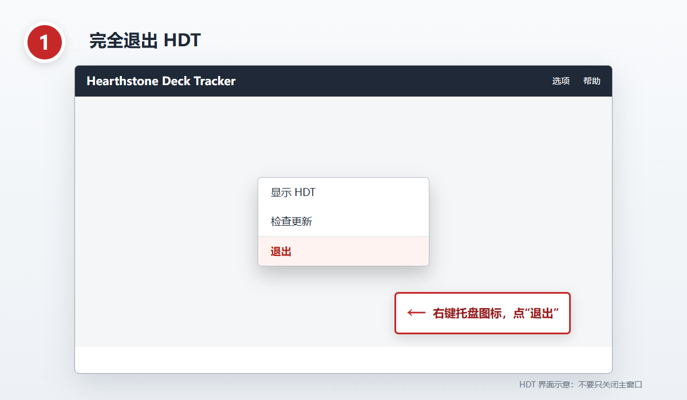
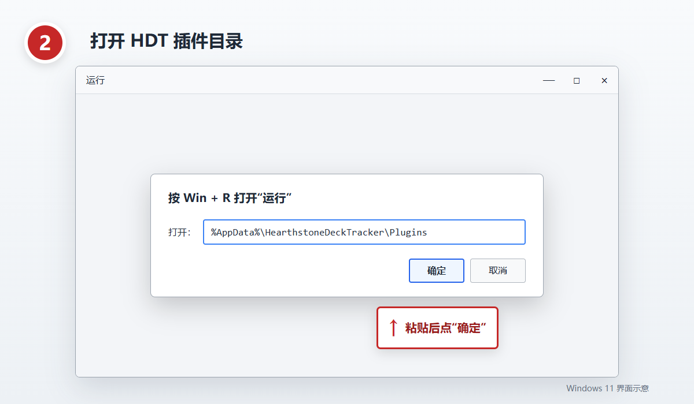
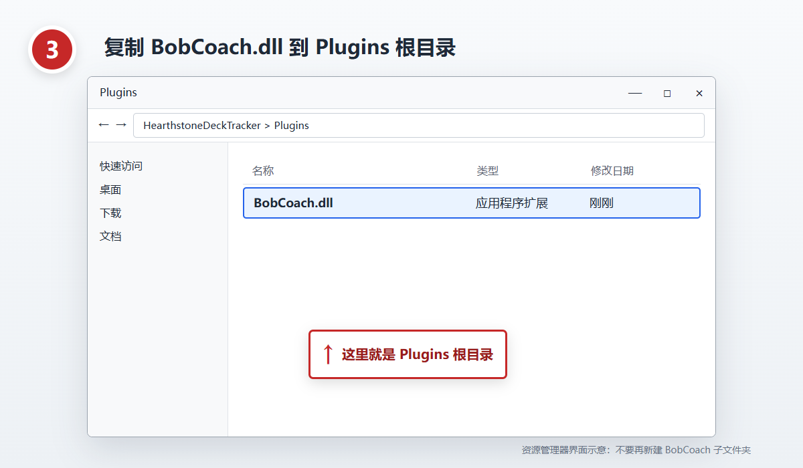
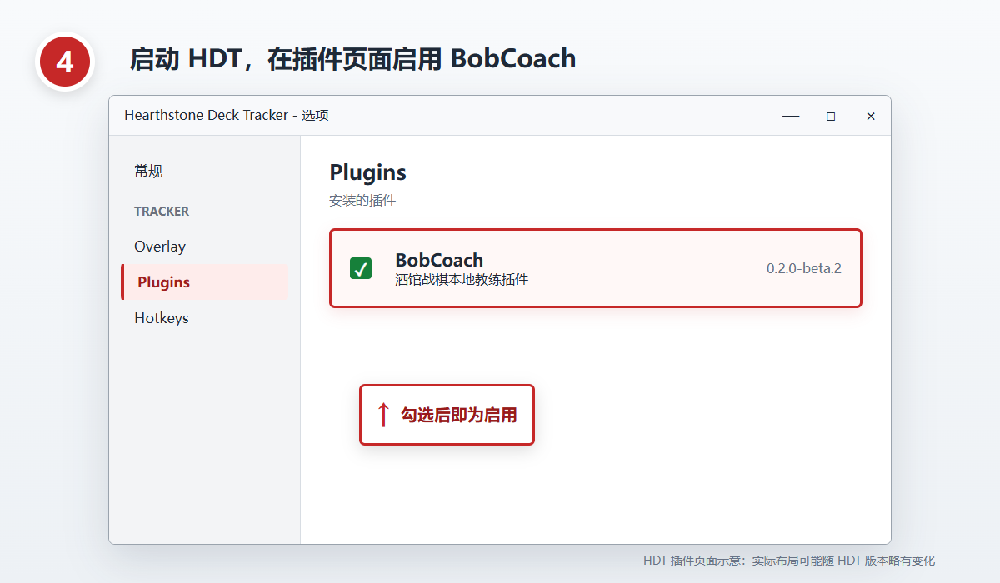

Bob Coach 中文图文安装教程
不用终端，四步完成。请先完整解压官方安装 ZIP，并确认能看到 BobCoach.dll。
下载：当前公开安装包是 BobCoach-0.2.0-beta.1-win-x64.zip，适用于 Windows 11 24H2 x64 和 Windows 10 22H2 x64。已经在安装包内打开本教程时，无需再次下载。不要下载
Source code (zip) 或 Source code (tar.gz)，它们是源码快照。1完全退出 HDT
在 Windows 右下角通知区域找到 HDT 图标，右键后选择“退出”。不要只关闭主窗口；HDT 可能仍在后台运行。

图示：右键 HDT 通知区域图标，选择“退出”。
2打开插件目录
按 Win + R，粘贴 %AppData%\HearthstoneDeckTracker\Plugins，然后点“确定”。目录不存在时，先正常启动并退出一次 HDT。

图示：在“运行”窗口粘贴插件目录路径并点“确定”。
3复制 BobCoach.dll
将解压目录中的 BobCoach.dll 复制到刚打开的 Plugins 根目录。升级时选择替换已有文件，不要再创建 BobCoach 子文件夹。

图示：BobCoach.dll 应直接位于 Plugins 根目录。
4启动并启用 BobCoach
重新启动 HDT，打开 Options > Tracker > Plugins，找到 BobCoach 并勾选启用。重启一次 HDT，再确认它仍为启用状态。

图示：在 HDT 插件页面启用 BobCoach；实际布局可能随 HDT 版本略有变化。
没有看到 BobCoach
- 确认文件位于
%AppData%\HearthstoneDeckTracker\Plugins\BobCoach.dll。 - 右键 DLL 打开“属性”；如果有“解除锁定”，勾选后确定。
- 完全退出并重启 HDT，再检查插件页面。
可选高级安装
普通玩家不需要使用终端。需要完整性校验、自动备份或回退时，可在解压目录运行：
powershell.exe -NoProfile -ExecutionPolicy Bypass -File .\INSTALL.ps1看到 PASS installed 或 PASS upgraded 表示脚本安装完成。